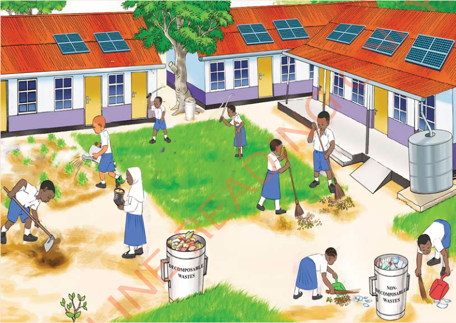

Activities for conserving school environment
Activity 7
Observe Figure 3; and then identify:

1. tools are used for cleaning in Figure 3.
2. activities done by the pupils in Figure 3.
Activities for conserving school environment
Observe Figure 3; and then identify:

1. tools are used for cleaning in Figure 3.
2. activities done by the pupils in Figure 3.